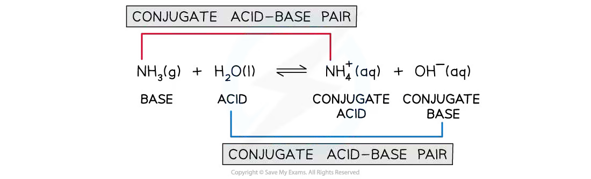
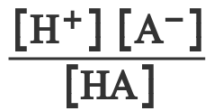
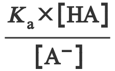
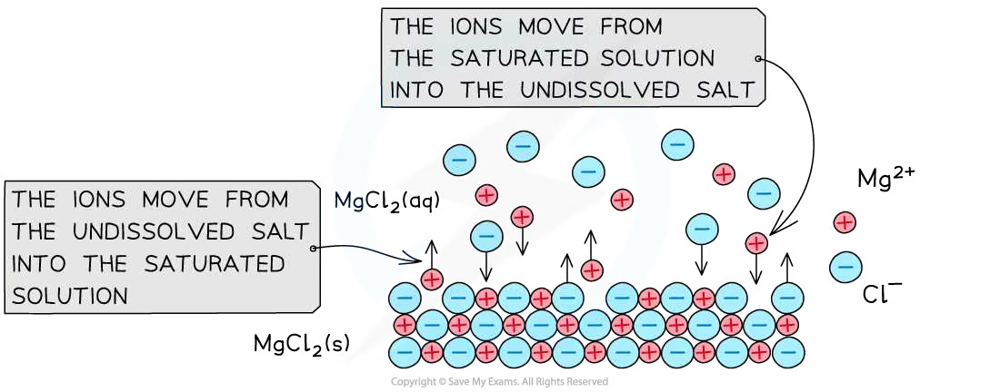
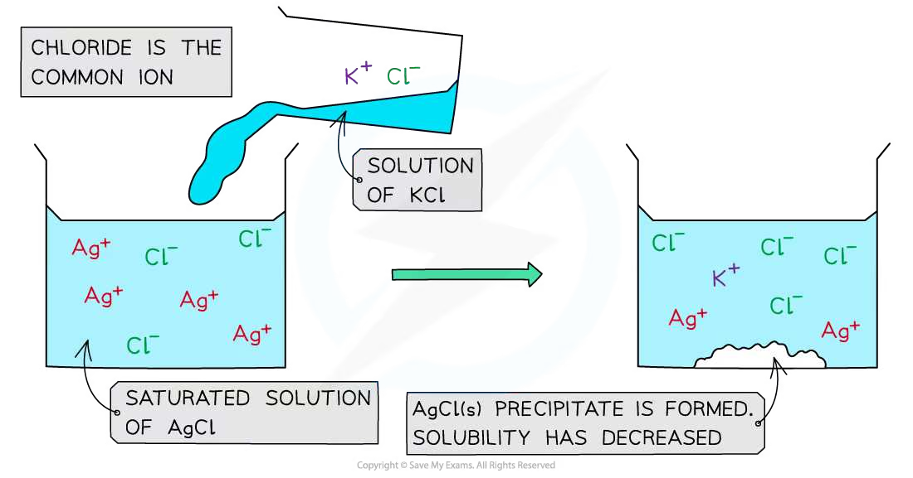
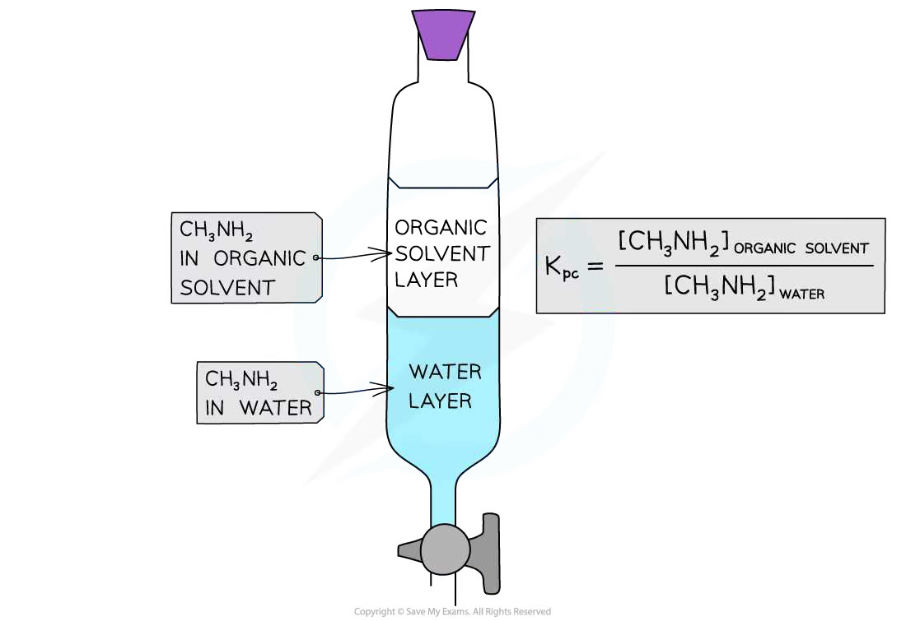

25 Equilibria
Acids and bases, buffers, solubility products, common-ion effect and partition coefficients
25 Equilibria
本章按 CIE 2025–2027 syllabus 的章节编号组织为 25.1 Acids and bases 与 25.2 Partition coefficients。题目来源仍保留旧专题题包的 5.5 Equilibria (A Level Only) 作为 source label，但页面知识点使用新考纲编号；不混入 AS 7.1 Chemical Equilibria，也不加入不属于 25 的旧题主题。
Learning objectives
学完本章后，你应该能够：
- explain Brønsted–Lowry acids and bases and identify conjugate acid–base pairs;
- use \(pH=-\log_{10}[\ce{H+}]\), \(K_a\), p\(K_a\) and \(K_w\);
- distinguish strong acids, strong alkalis and weak acids, and calculate their pH values;
- define buffer solutions, explain how they resist pH change and calculate their pH;
- explain the bicarbonate buffer system in blood;
- write \(K_{sp}\) expressions, calculate \(K_{sp}\) or solubility, and use the common-ion effect;
- decide whether a precipitate forms by comparing the ionic product with \(K_{sp}\);
- define \(K_{pc}\), calculate it from equilibrium concentrations and explain its value using solute and solvent polarity.
25.1 Acids and bases
Brønsted–Lowry acids, bases and conjugate pairs
在 Brønsted–Lowry 定义中，an acid is a proton donor，而 a base is a proton acceptor。酸失去一个质子后形成它的 conjugate base；碱接受一个质子后形成它的 conjugate acid。
例如：
\[\ce{HCl + H2O -> Cl- + H3O+}\]
这里 \(\ce{HCl/Cl-}\) 是一对 conjugate acid–base pair，\(\ce{H2O/H3O+}\) 是另一对。conjugate pair 只相差一个 \(\ce{H+}\)。
对弱酸：
\[\ce{HA(aq) <=> H+(aq) + A-(aq)}\]
\(\ce{HA}\) 是 acid，\(\ce{A-}\) 是 conjugate base。平衡向右的程度越大，酸越强。

Worked example · 笔记例题
Identifying conjugate acid–base pairs
Identify the conjugate acid-base pairs in the following equilibrium reaction:
\[\ce{NH3(g) + H2O(l) <=> NH4+(aq) + OH-(aq)}\]
Forward reaction:
- \(\ce{NH3}\) accepts a proton to form \(\ce{NH4+}\). Therefore, \(\ce{NH4+}\) is the conjugate acid of \(\ce{NH3}\).
- \(\ce{H2O}\) donates a proton to form \(\ce{OH-}\). Therefore, \(\ce{OH-}\) is the conjugate base of \(\ce{H2O}\).
Reverse reaction:
- \(\ce{NH4+}\) donates a proton to form \(\ce{NH3}\). Therefore, \(\ce{NH3}\) is the conjugate base of \(\ce{NH4+}\).
- \(\ce{OH-}\) accepts a proton to form \(\ce{H2O}\). Therefore, \(\ce{H2O}\) is the conjugate acid of \(\ce{OH-}\).
Final answer: the conjugate acid-base pairs are \(\ce{NH3/NH4+}\) and \(\ce{H2O/OH-}\).
pH, \(K_a\), p\(K_a\) and \(K_w\)
对水溶液：
\[pH=-\log_{10}[\ce{H+}]\]
\[[\ce{H+}]=10^{-pH}\]
弱酸的 acid dissociation constant 为：
\[K_a=\frac{[\ce{H+}][\ce{A-}]}{[\ce{HA}]}\]
\[pK_a=-\log_{10}K_a\]
\(K_a\) 越大，酸越强；p\(K_a\) 越小，酸越强。水的离子积为：
\[K_w=[\ce{H+}][\ce{OH-}]=1.00\times10^{-14}\quad (298\ \mathrm{K})\]
因此：
\[[\ce{OH-}]=\frac{K_w}{[\ce{H+}]}\]
考纲本节不要求使用 \(K_b\)，也不要求使用 \(K_w=K_aK_b\)。
Worked example · 笔记例题
Calculating the pH of acids
Calculate the pH of ethanoic acid, at 298 K, when the hydrogen ion concentration is \(1.32\times10^{-3}\ \mathrm{mol\,dm^{-3}}\).
Use the definition of pH:
\[pH=-\log_{10}[\ce{H+}]\]
Substitute the hydrogen ion concentration:
\[pH=-\log(1.32\times10^{-3})\]
\[pH=2.9\]
Final answer: \(pH=2.9\).
Worked example · 笔记例题
Calculating \(K_a\) and p\(K_a\) of a weak acid
Calculate the \(K_a\) and p\(K_a\) values of \(0.100\ \mathrm{mol\,dm^{-3}}\) ethanoic acid at 298 K which forms \(1.32\times10^{-3}\ \mathrm{mol\,dm^{-3}}\) of \(\ce{H+}\) ions in solution.
Write the dissociation equilibrium:
\[\ce{CH3COOH(aq) <=> H+(aq) + CH3COO-(aq)}\]
Write the expression for \(K_a\):
\[K_a=\frac{[\ce{H+}][\ce{CH3COO-}]}{[\ce{CH3COOH}]}\]
The ratio of \(\ce{H+}\) to \(\ce{CH3COO-}\) formed is 1:1, so:
\[K_a=\frac{[\ce{H+}]^2}{[\ce{CH3COOH}]}\]
Substitute the concentrations:
\[K_a=\frac{(1.32\times10^{-3})^2}{0.100}\]
\[K_a=1.74\times10^{-5}\ \mathrm{mol\,dm^{-3}}\]
The units are:
\[K_a=\frac{(\mathrm{mol\,dm^{-3}})^2}{\mathrm{mol\,dm^{-3}}}=\mathrm{mol\,dm^{-3}}\]
Now calculate p\(K_a\):
\[pK_a=-\log_{10}K_a\]
\[pK_a=-\log_{10}(1.74\times10^{-5})=4.76\]
Final answer: \(K_a=1.74\times10^{-5}\ \mathrm{mol\,dm^{-3}}\) and p\(K_a=4.76\).
Worked example · 笔记例题
Calculating the concentration of \(\ce{H+}\) in pure water
Calculate the concentration of \(\ce{H+}\) in pure water, using the ionic product of water.
The ionisation of water is:
\[\ce{H2O(l) <=> H+(aq) + OH-(aq)}\]
The ionic product of water is:
\[K_w=\frac{[\ce{H+}][\ce{OH-}]}{[\ce{H2O}]}\]
Because the concentration of water is approximately constant, it is included in the constant:
\[K_w=[\ce{H+}][\ce{OH-}]\]
In pure water, \([\ce{H+}]=[\ce{OH-}]\), so:
\[K_w=[\ce{H+}]^2\]
Rearrange and substitute:
\[[\ce{H+}]=\sqrt{K_w}=\sqrt{1.00\times10^{-14}}\]
\[[\ce{H+}]=1.00\times10^{-7}\ \mathrm{mol\,dm^{-3}}\]
Final answer: \([\ce{H+}]=1.00\times10^{-7}\ \mathrm{mol\,dm^{-3}}\).
Worked example · 笔记例题
pH calculations of a strong acid
For a solution of hydrochloric acid, calculate the following:
1. The pH when the hydrogen ion concentration is \(1.6\times10^{-4}\ \mathrm{mol\,dm^{-3}}\).
2. The hydrogen ion concentration when the pH is 3.1.
Hydrochloric acid is a strong monobasic acid:
\[\ce{HCl(aq) -> H+(aq) + Cl-(aq)}\]
1. Calculate the pH:
\[pH=-\log[\ce{H+}]\]
\[pH=-\log(1.6\times10^{-4})\]
\[pH=3.80\]
2. Calculate the hydrogen ion concentration:
\[pH=-\log[\ce{H+}]\]
\[[\ce{H+}]=10^{-pH}\]
\[[\ce{H+}]=10^{-3.1}\]
\[[\ce{H+}]=7.9\times10^{-4}\ \mathrm{mol\,dm^{-3}}\]
Final answer: 1. \(pH=3.80\); 2. \([\ce{H+}]=7.9\times10^{-4}\ \mathrm{mol\,dm^{-3}}\).
Worked example · 笔记例题
pH calculations of a strong alkali
For a solution of sodium hydroxide, calculate the following:
1. The pH when the hydrogen ion concentration is \(3.5\times10^{-11}\ \mathrm{mol\,dm^{-3}}\).
2. The hydroxide ion concentration when the pH is 12.3.
Sodium hydroxide is a strong base:
\[\ce{NaOH(aq) -> Na+(aq) + OH-(aq)}\]
1. Calculate the pH:
\[pH=-\log[\ce{H+}]\]
\[pH=-\log(3.5\times10^{-11})\]
\[pH=10.5\]
2. Calculate the hydroxide ion concentration:
First calculate \([\ce{H+}]\) from the pH:
\[[\ce{H+}]=10^{-pH}=10^{-12.3}=5.01\times10^{-13}\ \mathrm{mol\,dm^{-3}}\]
Use the ionic product of water:
\[K_w=[\ce{H+}][\ce{OH-}]\]
\[[\ce{OH-}]=\frac{K_w}{[\ce{H+}]}\]
\[[\ce{OH-}]=\frac{1.00\times10^{-14}}{5.01\times10^{-13}}\]
\[[\ce{OH-}]=0.0199\ \mathrm{mol\,dm^{-3}}\]
Final answer: 1. \(pH=10.5\); 2. \([\ce{OH-}]=0.0199\ \mathrm{mol\,dm^{-3}}\).
Worked example · 笔记例题
pH calculations of weak acids
Calculate the pH of \(0.100\ \mathrm{mol\,dm^{-3}}\) ethanoic acid at 298 K with a \(K_a\) value of \(1.74\times10^{-5}\ \mathrm{mol\,dm^{-3}}\).
Write the dissociation equilibrium:
\[\ce{CH3COOH(aq) <=> H+(aq) + CH3COO-(aq)}\]
Write the expression for \(K_a\):
\[K_a=\frac{[\ce{H+}][\ce{CH3COO-}]}{[\ce{CH3COOH}]}\]
As the ions are formed in a 1:1 ratio, \([\ce{H+}]=[\ce{CH3COO-}]\):
\[K_a=\frac{[\ce{H+}]^2}{[\ce{CH3COOH}]}\]
Rearrange and substitute:
\[[\ce{H+}]=\sqrt{K_a[\ce{CH3COOH}]}\]
\[[\ce{H+}]=\sqrt{(1.74\times10^{-5})(0.100)}=1.32\times10^{-3}\ \mathrm{mol\,dm^{-3}}\]
\[pH=-\log_{10}(1.32\times10^{-3})=2.88\]
Final answer: \([\ce{H+}]=1.32\times10^{-3}\ \mathrm{mol\,dm^{-3}}\) and \(pH=2.88\).
Buffer solutions
A buffer solution resists changes in pH when small amounts of acid or alkali are added.
An acidic buffer contains a weak acid, \(\ce{HA}\), and a soluble salt containing its conjugate base, \(\ce{A-}\), for example ethanoic acid and sodium ethanoate:
\[\ce{CH3COOH(aq) <=> H+(aq) + CH3COO-(aq)}\]
\[\ce{CH3COONa(aq) -> Na+(aq) + CH3COO-(aq)}\]
When a small amount of acid is added, the conjugate base removes most of the added \(\ce{H+}\):
\[\ce{CH3COO-(aq) + H+(aq) -> CH3COOH(aq)}\]
When a small amount of alkali is added, the weak acid removes most of the added \(\ce{OH-}\):
\[\ce{CH3COOH(aq) + OH-(aq) -> CH3COO-(aq) + H2O(l)}\]
因此 \([\ce{H+}]\) 变化很小，pH 只发生小幅变化。血液中的 bicarbonate buffer 可用下列平衡表示：
\[\ce{CO2(g) + H2O(l) <=> H+(aq) + HCO3-(aq)}\]
加入少量酸时，\(\ce{HCO3-}\) 消耗 \(\ce{H+}\)；加入少量碱时，碳酸体系补充 \(\ce{H+}\)，从而减小 pH 变化。
Buffer calculation formula
在弱酸 dissociation 的近似下：
\[K_a=\frac{[\ce{H+}][\ce{A-}]}{[\ce{HA}]}\]
\[[\ce{H+}]=K_a\frac{[\ce{HA}]}{[\ce{A-}]}\]
\[pH=pK_a+\log_{10}\frac{[\ce{A-}]}{[\ce{HA}]}\]
这里 \([\ce{A-}]\) 可用 soluble salt 的浓度表示，\([\ce{HA}]\) 可用 weak acid 的浓度表示。使用这些式子时，需要假设 weak acid 的 dissociation 很小，且盐完全 dissociate。


Worked example · 笔记例题
Calculating the pH of a buffer solution
A buffer solution contains ethanoic acid at \(0.305\ \mathrm{mol\,dm^{-3}}\) and sodium ethanoate at \(0.520\ \mathrm{mol\,dm^{-3}}\). The value of \(K_a\) for ethanoic acid is \(1.43\times10^{-5}\ \mathrm{mol\,dm^{-3}}\). Calculate the pH of the buffer solution.
Use the buffer equation:
\[[\ce{H+}]=K_a\frac{[\ce{CH3COOH}]}{[\ce{CH3COO-}]}\]
\[[\ce{H+}]=(1.43\times10^{-5})\frac{0.305}{0.520}=8.39\times10^{-6}\ \mathrm{mol\,dm^{-3}}\]
\[pH=-\log_{10}(8.39\times10^{-6})=5.08\]
Final answer: \(pH=5.08\).
Solubility products and the common-ion effect
For a sparingly soluble ionic compound, the saturated solution is in dynamic equilibrium with the solid. For example:
\[\ce{AgCl(s) <=> Ag+(aq) + Cl-(aq)}\]
\[K_{sp}=[\ce{Ag+}][\ce{Cl-}]\]
Pure solids are not included in the expression. If the dissolution produces unequal numbers of ions, use the stoichiometric coefficients as powers:
\[\ce{Ca(OH)2(s) <=> Ca^{2+}(aq) + 2OH-(aq)}\]
\[K_{sp}=[\ce{Ca^{2+}}][\ce{OH-}]^2\]
The common-ion effect is explained by Le Chatelier’s principle. Adding a common ion shifts the equilibrium to the left and decreases solubility. Removing one of the dissolved ions can shift the equilibrium to the right and increase solubility.


Worked example · 笔记例题
Expressing \(K_{sp}\) of ionic compounds
Give the equilibrium expressions, including units, for the solubility products of the following ionic compounds:
1. \(\ce{Ca(OH)2}\)
2. \(\ce{Fe2O3}\)
3. \(\ce{SnCO3}\)
\[\ce{Ca(OH)2(s) <=> Ca^{2+}(aq) + 2OH-(aq)}\]
\[K_{sp}=[\ce{Ca^{2+}}][\ce{OH-}]^2\]
\[K_{sp}=(\mathrm{mol\,dm^{-3}})(\mathrm{mol\,dm^{-3}})^2 =\mathrm{mol^3\,dm^{-9}}\]
\[\ce{Fe2O3(s) <=> 2Fe^{3+}(aq) + 3O^{2-}(aq)}\]
\[K_{sp}=[\ce{Fe^{3+}}]^2[\ce{O^{2-}}]^3\]
\[K_{sp}=(\mathrm{mol\,dm^{-3}})^2(\mathrm{mol\,dm^{-3}})^3 =\mathrm{mol^5\,dm^{-15}}\]
\[\ce{SnCO3(s) <=> Sn^{2+}(aq) + CO3^{2-}(aq)}\]
\[K_{sp}=[\ce{Sn^{2+}}][\ce{CO3^{2-}}]\]
\[K_{sp}=(\mathrm{mol\,dm^{-3}})(\mathrm{mol\,dm^{-3}}) =\mathrm{mol^2\,dm^{-6}}\]
Final answer:
- \(K_{sp}= [\ce{Ca^{2+}}][\ce{OH-}]^2\), with units \(\mathrm{mol^3\,dm^{-9}}\).
- \(K_{sp}= [\ce{Fe^{3+}}]^2[\ce{O^{2-}}]^3\), with units \(\mathrm{mol^5\,dm^{-15}}\).
- \(K_{sp}= [\ce{Sn^{2+}}][\ce{CO3^{2-}}]\), with units \(\mathrm{mol^2\,dm^{-6}}\).
Worked example · 笔记例题
Calculating \(K_{sp}\) from solubility
Calculate the solubility product of a saturated solution of lead(II) bromide, \(\ce{PbBr2}\), with a solubility of \(1.39\times10^{-3}\ \mathrm{mol\,dm^{-3}}\).
\[\ce{PbBr2(s) <=> Pb^{2+}(aq) + 2Br-(aq)}\]
The solubility of \(\ce{PbBr2}\) is:
\[[\ce{PbBr2}]=1.39\times10^{-3}\ \mathrm{mol\,dm^{-3}}\]
Therefore:
\[[\ce{Pb^{2+}}]=1.39\times10^{-3}\ \mathrm{mol\,dm^{-3}}\]
\[[\ce{Br-}]=2\times1.39\times10^{-3}=2.78\times10^{-3}\ \mathrm{mol\,dm^{-3}}\]
Use the solubility product expression:
\[K_{sp}=[\ce{Pb^{2+}}][\ce{Br-}]^2\]
\[K_{sp}=(1.39\times10^{-3})(2.78\times10^{-3})^2\]
\[K_{sp}=1.07\times10^{-8}\ \mathrm{mol^3\,dm^{-9}}\]
Final answer: \(K_{sp}=1.07\times10^{-8}\ \mathrm{mol^3\,dm^{-9}}\).
Worked example · 笔记例题
Calculating solubility from \(K_{sp}\)
Calculate the solubility of a saturated solution of copper(II) oxide, \(\ce{CuO}\), with a solubility product of \(5.9\times10^{-36}\ \mathrm{mol^2\,dm^{-6}}\).
\[\ce{CuO(s) <=> Cu^{2+}(aq) + O^{2-}(aq)}\]
The two ions are formed in a 1:1 ratio, so:
\[[\ce{Cu^{2+}}]=[\ce{O^{2-}}]\]
\[K_{sp}=[\ce{Cu^{2+}}][\ce{O^{2-}}]=[\ce{Cu^{2+}}]^2\]
Substitute the given \(K_{sp}\) value:
\[5.9\times10^{-36}=[\ce{Cu^{2+}}]^2\]
\[[\ce{Cu^{2+}}]=\sqrt{5.9\times10^{-36}} =2.4\times10^{-18}\ \mathrm{mol\,dm^{-3}}\]
Since \([\ce{CuO(s)}]=[\ce{Cu^{2+}(aq)}]\) on a molar basis, the solubility of \(\ce{CuO}\) is the same value.
Final answer: the solubility is \(2.4\times10^{-18}\ \mathrm{mol\,dm^{-3}}\).
Worked example · 笔记例题
Calculating precipitate formation using \(K_{sp}\) and a common ion
Predict whether a precipitate of \(\ce{CaSO4}\) will form if a saturated solution of \(1.0\times10^{-3}\ \mathrm{mol\,dm^{-3}}\) \(\ce{CaSO4}\) is mixed with an equal volume of \(1.0\times10^{-3}\ \mathrm{mol\,dm^{-3}}\) \(\ce{Na2SO4}\).
\(K_{sp}\) for \(\ce{CaSO4}=2.0\times10^{-5}\ \mathrm{mol^2\,dm^{-6}}\).
Write the equilibrium and \(K_{sp}\) expression:
\[\ce{CaSO4(s) <=> Ca^{2+}(aq) + SO4^{2-}(aq)}\]
\[K_{sp}=[\ce{Ca^{2+}}][\ce{SO4^{2-}}]\]
Equal volumes mean that the total solution volume doubles, so the calcium ion concentration is halved:
\[[\ce{Ca^{2+}}]=\frac{1.0\times10^{-3}}{2}=5.0\times10^{-4}\ \mathrm{mol\,dm^{-3}}\]
Sulfate is the common ion. Its concentration is:
\[[\ce{SO4^{2-}}]=1.0\times10^{-3}\ \mathrm{mol\,dm^{-3}}\]
Calculate the ionic product:
\[[\ce{Ca^{2+}}][\ce{SO4^{2-}}] =(5.0\times10^{-4})(1.0\times10^{-3}) =5.0\times10^{-7}\ \mathrm{mol^2\,dm^{-6}}\]
Compare \(Q_{sp}\) with \(K_{sp}\):
\[5.0\times10^{-7}<2.0\times10^{-5}\]
Because the ionic product is less than \(K_{sp}\), the solution is not saturated with respect to \(\ce{CaSO4}\).
Final answer: no precipitate forms.
25.2 Partition coefficients
Definition and calculation of \(K_{pc}\)
When a solute is shaken with two immiscible solvents, it distributes between the two layers and reaches equilibrium. At a fixed temperature:
The partition coefficient, \(K_{pc}\), is the ratio of the equilibrium concentrations of a solute in two immiscible solvents.
For organic solvent / aqueous solvent, the convention used here is:
\[K_{pc}=\frac{[\text{solute}]_{\text{organic}}}{[\text{solute}]_{\text{aqueous}}}\]
Both concentrations must use the same units, normally mol dm\(^{-3}\). If \(K_{pc}>1\), the solute is more concentrated in the organic layer under the stated conditions; if \(K_{pc}<1\), it is more concentrated in the aqueous layer.
The value depends on the polarity of both solute and solvent. Polar solutes generally interact more strongly with polar water; less-polar or hydrophobic parts of a molecule favour a less-polar organic solvent. The layers must be allowed to reach equilibrium, and the temperature should be kept constant.

Worked example · 笔记例题
Methylamine partition coefficient between water and an organic solvent
A mixture contains \(100\ \mathrm{cm^3}\) of aqueous methylamine and \(75.0\ \mathrm{cm^3}\) of an organic solvent. The original aqueous methylamine concentration is \(0.150\ \mathrm{mol\,dm^{-3}}\). A \(50.0\ \mathrm{cm^3}\) sample of the aqueous layer requires \(14.1\ \mathrm{cm^3}\) of \(0.225\ \mathrm{mol\,dm^{-3}}\) hydrochloric acid for complete reaction. Calculate the partition coefficient of methylamine between the organic solvent and water.
The reaction with hydrochloric acid is 1:1:
\[\ce{CH3NH2 + HCl -> CH3NH3+ + Cl-}\]
Moles of methylamine in the \(50.0\ \mathrm{cm^3}\) aqueous sample:
\[n(\ce{HCl})=0.225\times\frac{14.1}{1000}=3.17\times10^{-3}\ \mathrm{mol}\]
Therefore \(n(\ce{CH3NH2})=3.17\times10^{-3}\ \mathrm{mol}\) in \(50.0\ \mathrm{cm^3}\).
Moles in the full \(100\ \mathrm{cm^3}\) aqueous layer:
\[n_{\mathrm{aqueous}}=2(3.17\times10^{-3})=6.34\times10^{-3}\ \mathrm{mol}\]
Total moles initially present:
\[n_{\mathrm{initial}}=0.150\times\frac{100}{1000}=0.0150\ \mathrm{mol}\]
Moles in the organic layer:
\[n_{\mathrm{organic}}=0.0150-0.00634=8.67\times10^{-3}\ \mathrm{mol}\]
Equilibrium concentrations:
\[[\ce{CH3NH2}]_{\mathrm{aqueous}}=\frac{6.34\times10^{-3}}{0.100}=0.0634\ \mathrm{mol\,dm^{-3}}\]
\[[\ce{CH3NH2}]_{\mathrm{organic}}=\frac{8.67\times10^{-3}}{0.0750}=0.116\ \mathrm{mol\,dm^{-3}}\]
Calculate \(K_{pc}\):
\[K_{pc}=\frac{0.116}{0.0634}=1.83\]
Final answer: \(K_{pc}=1.83\) for organic solvent / water, so methylamine is more concentrated in the organic layer in this experiment.
Chapter checklist
Structured questions
25 Equilibria - Structured Questions
本页保留 5.5 Equilibria (A Level Only) 题包中与新考纲 25.1 Acids and bases 和 25.2 Partition coefficients 直接相关的 Structured Questions。每题保留完整英文题干、分问和完整解答步骤；旧题包中属于 entropy、Gibbs energy、Group 2 carbonate thermal stability 或有机反应机理的内容不属于新考纲 25，因此不收入本页。
5.5 Equilibria (A Level Only) - Easy
Example 1 · Silver chloride and iron(II) hydroxide \(K_{sp}\) · 5.5 SQ Easy Q1
A saturated solution of silver(I) chloride has a solubility of \(1.46\times10^{-3}\ \mathrm{mol\,dm^{-3}}\).
(a) Write the expression for the solubility product, \(K_{sp}\), for silver(I) chloride. [1 mark]
(b) Using the information and your answer given in part (a), calculate the solubility product, \(K_{sp}\), and its units for silver chloride. Show your working. [3 marks]
A saturated solution of iron(II) hydroxide has a solubility of \(5.82\times10^{-6}\ \mathrm{mol\,dm^{-3}}\).
(c)(i) Write the expression for the solubility product, \(K_{sp}\), for iron(II) hydroxide. [1 mark]
(c)(ii) Calculate the solubility product and units for iron(II) hydroxide. Show your working. [3 marks]
Show mark scheme / model answer
(a) \[\ce{AgCl(s) <=> Ag+(aq) + Cl-(aq)}\]
\[K_{sp}=[\ce{Ag+}][\ce{Cl-}]\]
[1](b) For AgCl, the ion concentrations are both \(1.46\times10^{-3}\ \mathrm{mol\,dm^{-3}}\):
\[K_{sp}=(1.46\times10^{-3})(1.46\times10^{-3})=2.13\times10^{-6}\]
Units: \((\mathrm{mol\,dm^{-3}})^2=\mathrm{mol^2\,dm^{-6}}\).
[3](c)(i) \[\ce{Fe(OH)2(s) <=> Fe^{2+}(aq) + 2OH-(aq)}\]
\[K_{sp}=[\ce{Fe^{2+}}][\ce{OH-}]^2\]
[1](c)(ii)
\[[\ce{Fe^{2+}}]=5.82\times10^{-6}\]
\[[\ce{OH-}]=2(5.82\times10^{-6})=1.164\times10^{-5}\]
\[K_{sp}=(5.82\times10^{-6})(1.164\times10^{-5})^2=7.89\times10^{-16}\ \mathrm{mol^3\,dm^{-9}}\]
[3]
Example 2 · Ethylamine partition coefficient · 5.5 SQ Easy Q2
The general equilibrium expression for the partition coefficient is:
\[K_{pc}=\frac{\text{equilibrium concentration in organic layer}}{\text{equilibrium concentration in aqueous layer}}\]
\(100\ \mathrm{cm^3}\) of a \(0.5\ \mathrm{mol\,dm^{-3}}\) solution of aqueous ethylamine, \(\ce{CH3CH2NH2}\), was shaken with \(100\ \mathrm{cm^3}\) of an organic solvent at \(25\ ^\circ\mathrm{C}\) and left in a separating funnel to allow an equilibrium to be established. The equilibrium equation is:
\[\ce{CH3CH2NH2(aq) <=> CH3CH2NH2(organic solvent)}\]
Only \(50\ \mathrm{cm^3}\) of the aqueous layer was run off and titrated against \(0.50\ \mathrm{mol\,dm^{-3}}\) dilute hydrochloric acid. \(15.0\ \mathrm{cm^3}\) of hydrochloric acid was required to reach the end point.
\[\ce{CH3CH2NH2(aq) + HCl(aq) -> CH3CH2NH3+(aq) + Cl-(aq)}\]
(a)(i) Calculate the amount, in moles, of ethylamine that has reacted with hydrochloric acid. [1 mark]
(a)(ii) Calculate the amount, in moles, of ethylamine in the aqueous layer. [1 mark]
(a)(iii) Calculate the amount, in moles, of ethylamine in the organic layer. [1 mark]
(a)(iv) Calculate the concentration, in mol dm\(^{-3}\), of ethylamine in the aqueous and organic layer. [1 mark]
(a)(v) Calculate the partition coefficient, \(K_{pc}\), of ethylamine between water and the organic solvent. [1 mark]
(b) Use your answer to part (a) to determine whether ethylamine is more soluble in the aqueous or organic solvent. Explain your answer. [2 marks]
Show mark scheme / model answer
In the \(50\ \mathrm{cm^3}\) titrated sample:
\[n(\ce{HCl})=0.50\times0.0150=0.0075\ \mathrm{mol}\]
The reaction is 1:1, so \(n(\ce{CH3CH2NH2})=0.0075\ \mathrm{mol}\).
[1]The titrated sample is half of the \(100\ \mathrm{cm^3}\) aqueous layer:
\[n_{\mathrm{aqueous}}=2(0.0075)=0.015\ \mathrm{mol}\]
[1]Total initial moles:
\[n_{\mathrm{initial}}=0.5\times0.100=0.050\ \mathrm{mol}\]
\[n_{\mathrm{organic}}=0.050-0.015=0.035\ \mathrm{mol}\]
[1]Concentrations:
\[[\ce{CH3CH2NH2}]_{aq}=\frac{0.015}{0.100}=0.15\ \mathrm{mol\,dm^{-3}}\]
\[[\ce{CH3CH2NH2}]_{org}=\frac{0.035}{0.100}=0.35\ \mathrm{mol\,dm^{-3}}\]
[1]\[K_{pc}=\frac{0.35}{0.15}=2.3\]
[1]
- (b) Ethylamine is more soluble in the organic solvent because \(K_{pc}>1\), so its equilibrium concentration is higher in the organic layer.
[2]
Example 3 · Compound A partition coefficient · 5.5 SQ Easy Q2(c)
A solution containing \(1.00\ \mathrm{g}\) of compound A in \(100\ \mathrm{cm^3}\) of water was shaken with \(10\ \mathrm{cm^3}\) of ether. \(0.60\ \mathrm{g}\) of A was transferred to the ether layer.
Calculate the partition coefficient of compound A between ether and water. Show your working. [3 marks]
Show mark scheme / model answer
Mass of A in ether: \(0.60\ \mathrm{g}\).
Mass of A remaining in water: \(1.00-0.60=0.40\ \mathrm{g}\).
Convert to concentrations:
\[[A]_{ether}=\frac{0.60}{0.010}=60\ \mathrm{g\,dm^{-3}}\]
\[[A]_{water}=\frac{0.40}{0.100}=4.0\ \mathrm{g\,dm^{-3}}\]
\[K_{pc}=\frac{[A]_{ether}}{[A]_{water}}=\frac{60}{4.0}=15\]
Final answer: \(K_{pc}=15\).[3]
Example 4 · Common-ion effect in silver bromide · 5.5 SQ Easy Q3
The \(K_{sp}\) value for silver bromide, \(\ce{AgBr(s)}\), is \(3.3\times10^{-8}\) at \(298\ \mathrm{K}\).
(a) Write the equilibrium equation for the changes that happen in a saturated solution of silver bromide in the presence of some solid. [1 mark]
(b) A solution of sodium bromide was added to a saturated solution of silver bromide. How would the concentration of dissolved silver ions change? Explain your answer. [2 marks]
(c) Calculate the concentration, in mol dm\(^{-3}\), of silver ions at \(298\ \mathrm{K}\) in a saturated solution of silver bromide. Show your working. [2 marks]
Show mark scheme / model answer
(a) \[\ce{AgBr(s) <=> Ag+(aq) + Br-(aq)}\]
[1](b) \([\ce{Ag+}]\) decreases. Adding \(\ce{Br-}\) shifts the equilibrium to the left, so more solid AgBr forms and the solubility decreases.
[2](c) In a saturated solution with equal ion concentrations, \(K_{sp}=s^2\):
\[s=\sqrt{3.3\times10^{-8}}=5.74\times10^{-4}\ \mathrm{mol\,dm^{-3}}\]
Final answer: \([\ce{Ag+}]=5.74\times10^{-4}\ \mathrm{mol\,dm^{-3}}\).
[2]
Example 5 · Propanoic acid buffer · 5.5 SQ Easy Q4
Acidic buffer solutions are made of a weak acid and its salt. pH calculations of buffer solutions can be conducted using:
\[K_a=\frac{[\ce{H+}][\ce{A-}]}{[\ce{HA}]}\]
(a) State the assumptions made when using this equation for buffer solutions. [3 marks]
(b) Suggest a salt that could be used to form a buffer solution with propanoic acid, \(\ce{CH3CH2COOH}\). [1 mark]
A buffer solution contains a \(0.15\ \mathrm{mol\,dm^{-3}}\) concentration of propanoic acid and a propanoate salt with a concentration of \([\ce{A-}]=0.30\ \mathrm{mol\,dm^{-3}}\). At \(298\ \mathrm{K}\), \(K_a\) for propanoic acid is \(1.35\times10^{-5}\ \mathrm{mol\,dm^{-3}}\).
(c)(i) Calculate \([\ce{H+}]\) in this buffer solution. [3 marks]
(c)(ii) Calculate the pH of the buffer solution to two decimal places. [1 mark]
(d) Predict and explain the effect on pH of increasing the concentration of the salt only. [2 marks]
Show mark scheme / model answer
(a) Assume \([\ce{HA}]\) is the concentration of the weak acid; \([\ce{A-}]\) is the concentration supplied by the salt; and dissociation of the weak acid is small, so its change in concentration can be neglected.
[3](b) Sodium propanoate, \(\ce{CH3CH2COONa}\), or potassium propanoate.
[1](c)(i)
\[[\ce{H+}]=K_a\frac{[\ce{HA}]}{[\ce{A-}]}=(1.35\times10^{-5})\frac{0.15}{0.30}=6.75\times10^{-6}\ \mathrm{mol\,dm^{-3}}\]
[3](c)(ii) \[pH=-\log_{10}(6.75\times10^{-6})=5.17\]
[1](d) pH increases because increasing \([\ce{A-}]\) decreases \([\ce{H+}]\) in \([\ce{H+}]=K_a[\ce{HA}]/[\ce{A-}]\).
[2]
Example 6 · Strong and weak acid pH · 5.5 SQ Easy Q5
Two acids used in the same laboratory, which both have the same concentration, \(0.1\ \mathrm{mol\,dm^{-3}}\), can have significantly different pH values. Explain why. [2 marks]
(a) Calculate the pH of a solution of \(0.1\ \mathrm{mol\,dm^{-3}}\) HCl. Show your working. [2 marks]
A sample of \(0.1\ \mathrm{mol\,dm^{-3}}\) methanoic acid has a \(K_a\) value of \(1.78\times10^{-4}\ \mathrm{mol\,dm^{-3}}\) at \(298\ \mathrm{K}\).
(b)(i) Write an expression for \(K_a\) for methanoic acid. [1 mark]
(b)(ii) Calculate the pH of the \(0.1\ \mathrm{mol\,dm^{-3}}\) methanoic acid. Give your answer to two decimal places and show your working. [3 marks]
Show mark scheme / model answer
Equal concentrations can give different pH values because acids have different strengths. A strong acid dissociates completely, whereas a weak acid only partially dissociates; pH depends on \([\ce{H+}]\).
[2](a) HCl is strong:
\[[\ce{H+}]=0.100\]
\[pH=-\log_{10}(0.100)=1.00\]
[2](b)(i)
\[\ce{HCOOH(aq) <=> H+(aq) + HCOO-(aq)}\]
\[K_a=\frac{[\ce{H+}][\ce{HCOO-}]}{[\ce{HCOOH}]}\]
[1](b)(ii)
\[[\ce{H+}]=\sqrt{K_a[\ce{HCOOH}]}=\sqrt{(1.78\times10^{-4})(0.100)}=4.22\times10^{-3}\]
\[pH=-\log_{10}(4.22\times10^{-3})=2.37\]
[3]
5.5 Equilibria (A Level Only) - Medium
Example 7 · Ammonia partition coefficient and polarity · 5.5 SQ Medium Q1(a)
Ammonia is soluble in both water and organic solvents. An aqueous solution of ammonia is shaken with the immiscible organic solvent trichloromethane. The mixture is left to reach equilibrium. Samples are taken from each layer and titrated with dilute hydrochloric acid.
A \(25.0\ \mathrm{cm^3}\) sample from the trichloromethane layer requires \(13.0\ \mathrm{cm^3}\) of \(0.100\ \mathrm{mol\,dm^{-3}}\) HCl to reach the end-point. A \(10.0\ \mathrm{cm^3}\) sample from the aqueous layer requires \(12.5\ \mathrm{cm^3}\) of \(0.100\ \mathrm{mol\,dm^{-3}}\) HCl.
(a)(i) State what is meant by partition coefficient. [2 marks]
(a)(ii) Calculate the partition coefficient, \(K_{pc}\), of ammonia between trichloromethane and water. Show your working. [2 marks]
(a)(iii) Butylamine, \(\ce{C4H9NH2}\), is also soluble in both water and organic solvents. Suggest how the numerical value of \(K_{pc}\) of butylamine between trichloromethane and water would compare to the value calculated in (a)(ii). Explain your answer. [2 marks]
Show mark scheme / model answer
(a)(i) \(K_{pc}\) is the ratio of the equilibrium concentrations of a solute in two immiscible solvents at a fixed temperature.
[2](a)(ii)
For the aqueous sample:
\[[\ce{NH3}]_{aq}=\frac{0.100\times0.0125}{0.0100}=0.125\ \mathrm{mol\,dm^{-3}}\]
For the organic sample:
\[[\ce{NH3}]_{org}=\frac{0.100\times0.0130}{0.0250}=0.0520\ \mathrm{mol\,dm^{-3}}\]
\[K_{pc}=\frac{0.0520}{0.125}=0.416\]
The reciprocal definition, water / organic, gives \(2.40\) and should be labelled clearly.
[2](a)(iii) If organic / water is used, butylamine has a \(K_{pc}\) larger than \(0.416\). Its hydrophobic, non-polar C4 chain makes it more soluble in trichloromethane.
[2]
Example 8 · Piperidine titration and conjugate acid salts · 5.5 SQ Medium Q3
The pH of a \(0.150\ \mathrm{mol\,dm^{-3}}\) solution of piperidine is 11.9. \(20.0\ \mathrm{cm^3}\) of \(0.200\ \mathrm{mol\,dm^{-3}}\) HCl was slowly added to a \(20.0\ \mathrm{cm^3}\) sample of \(0.150\ \mathrm{mol\,dm^{-3}}\) piperidine. One mole of hydrochloric acid reacts with one mole of piperidine.
(a)(i) Calculate the number of moles of HCl remaining at the end of the addition. [2 marks]
(a)(ii) Hence calculate \([\ce{H+}]\) and the pH at the end of the addition. [3 marks]
(b) Sketch how the pH will change during addition of a total of \(20.0\ \mathrm{cm^3}\) of \(0.200\ \mathrm{mol\,dm^{-3}}\) HCl. [3 marks]
(c) The student repeated the titration using \(25.0\ \mathrm{cm^3}\) of \(0.100\ \mathrm{mol\,dm^{-3}}\) nitric acid, \(\ce{HNO3(aq)}\), and \(0.100\ \mathrm{mol\,dm^{-3}}\) ammonia, \(\ce{NH3(aq)}\).
(c)(i) State the equation for this reaction. [1 mark]
(c)(ii) Explain why the salt produced in this reaction is acidic. [4 marks]
(d) State the equation for the reaction between nitric acid and water and identify the conjugate acid formed. [2 marks]
Show mark scheme / model answer
(a)(i)
\[n(\ce{HCl})_{start}=0.0200\times0.200=4.00\times10^{-3}\ \mathrm{mol}\]
\[n(\ce{piperidine})=0.0200\times0.150=3.00\times10^{-3}\ \mathrm{mol}\]
\[n(\ce{HCl})_{remaining}=4.00\times10^{-3}-3.00\times10^{-3}=1.00\times10^{-3}\ \mathrm{mol}\]
[2](a)(ii) Total volume is \(40.0\ \mathrm{cm^3}\):
\[[\ce{H+}]=\frac{1.00\times10^{-3}}{0.0400}=0.0250\ \mathrm{mol\,dm^{-3}}\]
\[pH=-\log_{10}(0.0250)=1.60\]
[3](b) Start at pH 11.9, decrease gradually, then show a steep vertical change centred at the equivalence point \(15.0\ \mathrm{cm^3}\), and level off near pH 1.60 at \(20.0\ \mathrm{cm^3}\).
[3](c)(i) \[\ce{HNO3(aq) + NH3(aq) -> NH4NO3(aq)}\]
[1](c)(ii) \(\ce{NH4NO3}\) dissociates into \(\ce{NH4+}\) and \(\ce{NO3-}\). \(\ce{NH4+}\) is the conjugate acid of the weak base \(\ce{NH3}\) and reacts with hydroxide ions:
\[\ce{NH4+(aq) + OH-(aq) -> NH3(aq) + H2O(l)}\]
This increases acidity and lowers pH.
[4](d)
\[\ce{HNO3(aq) + H2O(l) -> NO3-(aq) + H3O+(aq)}\]
Conjugate acid: \(\ce{H3O+}\).
[2]
Example 9 · Buffers and bicarbonate equilibrium · 5.5 SQ Medium Q4
(a) Give the meaning of the term buffer solution. [1 mark]
(b) Buffers can be acidic but they can also be basic.
(b)(i) Describe how an acidic buffer is made. [1 mark]
(b)(ii) State the key feature which makes a buffer acidic. [1 mark]
(c) Ethanoic acid is a weak acid. Hydrogen carbonate ions act as a weak acid if they are in an aqueous solution.
(c)(i) Write equations for each of these weak acids at equilibrium. [2 marks]
(c)(ii) A solution was made up containing sodium hydrogen carbonate and sodium carbonate. Explain how this solution would act as a buffer if a small amount of acid was added to it. [2 marks]
(d) Explain how a solution of ethanoic acid works as a buffer when small amounts of alkali are added. [2 marks]
(e) A buffer solution contains \(0.10\ \mathrm{mol\,dm^{-3}}\) methanoic acid and \(0.20\ \mathrm{mol\,dm^{-3}}\) sodium methanoate. \(K_a\) for methanoic acid is \(1.80\times10^{-4}\ \mathrm{mol\,dm^{-3}}\). Calculate the pH at \(298\ \mathrm{K}\), to two decimal places. [4 marks]
Show mark scheme / model answer
(a) A buffer resists or minimises changes in pH when small amounts of acid or alkali are added.
[1](b) (i) Mix a weak acid with a soluble salt of the same weak acid. (ii) Its pH is below 7.
[2](c)(i)
\[\ce{CH3COOH(aq) <=> H+(aq) + CH3COO-(aq)}\]
\[\ce{HCO3-(aq) <=> H+(aq) + CO3^{2-}(aq)}\]
[2](c)(ii) Added \(\ce{H+}\) reacts with \(\ce{CO3^{2-}}\) to form \(\ce{HCO3-}\), so most added acid is removed and pH changes only slightly.
[2](d) Added \(\ce{OH-}\) reacts with \(\ce{H+}\); the ethanoic acid equilibrium shifts right and dissociation replaces much of the removed \(\ce{H+}\).
[2](e)
\[[\ce{H+}]=K_a\frac{[\ce{HCOOH}]}{[\ce{HCOO-}]}=(1.80\times10^{-4})\frac{0.10}{0.20}=9.0\times10^{-5}\]
\[pH=-\log_{10}(9.0\times10^{-5})=5.05\]
[4]
Example 10 · \(K_{sp}\) precipitation and common ions · 5.5 SQ Medium Q5
A \(1.70\times10^{-3}\ \mathrm{mol\,dm^{-3}}\) solution of calcium nitrate is mixed with an equal volume of \(1.50\times10^{-3}\ \mathrm{mol\,dm^{-3}}\) potassium sulfate. Predict whether calcium sulfate, \(K_{sp}=2.00\times10^{-5}\), will precipitate. Show your working. [3 marks]
Water containing \(\ce{Mn^{2+}}\) at a concentration above \(1.8\times10^{-6}\ \mathrm{mol\,dm^{-3}}\) causes clothes to stain. Manganese can precipitate as \(\ce{Mn(OH)2(s)}\), which has \(K_{sp}=4.5\times10^{-14}\).
(b)(i) State the expression for \(K_{sp}\). [1 mark]
(b)(ii) Calculate the concentration of \(\ce{OH-}\) ions required. [2 marks]
(b)(iii) Calculate the minimum pH at \(298\ \mathrm{K}\) required to prevent clothes from being stained. Use \(K_w=1.00\times10^{-14}\). [2 marks]
(c) Consider the saturated equilibrium:
\[\ce{AgBr(s) <=> Ag+(aq) + Br-(aq)}\]
Explain what happens to the solubility of AgBr if the following are added: \(\ce{AgNO3}\), \(\ce{NaBr}\) and \(\ce{Pb(NO3)2}\). [3 marks]
(d) Explain why more \(\ce{Mg(OH)2}\) dissolves when hydrochloric acid is added to a saturated solution of \(\ce{Mg(OH)2}\). [3 marks]
Show mark scheme / model answer
(a) Equal volumes double the total volume, so:
\[[\ce{Ca^{2+}}]=\frac{1.70\times10^{-3}}{2}=8.50\times10^{-4}\]
\[[\ce{SO4^{2-}}]=\frac{1.50\times10^{-3}}{2}=7.50\times10^{-4}\]
\[Q_{sp}=(8.50\times10^{-4})(7.50\times10^{-4})=6.38\times10^{-7}\]
Since \(Q_{sp}<K_{sp}\), no precipitate forms.
[3](b)(i) \[K_{sp}=[\ce{Mn^{2+}}][\ce{OH-}]^2\]
[1](b)(ii) At the threshold:
\[4.5\times10^{-14}=(1.8\times10^{-6})[\ce{OH-}]^2\]
\[[\ce{OH-}]=1.58\times10^{-4}\ \mathrm{mol\,dm^{-3}}\]
[2](b)(iii)
\[[\ce{H+}]=\frac{1.00\times10^{-14}}{1.58\times10^{-4}}=6.32\times10^{-11}\]
\[pH=10.2\]
[2](c) \(\ce{AgNO3}\) adds common \(\ce{Ag+}\) and decreases solubility; \(\ce{NaBr}\) adds common \(\ce{Br-}\) and decreases solubility; \(\ce{Pb(NO3)2}\) removes \(\ce{Br-}\) by forming \(\ce{PbBr2(s)}\), so the AgBr equilibrium shifts right and solubility increases.
[3](d)
\[\ce{Mg(OH)2(s) <=> Mg^{2+}(aq) + 2OH-(aq)}\]
Added \(\ce{H+}\) reacts with \(\ce{OH-}\):
\[\ce{H+(aq) + OH-(aq) -> H2O(l)}\]
Removing \(\ce{OH-}\) shifts the solubility equilibrium right, so more solid dissolves.
[3]
5.5 Equilibria (A Level Only) - Hard
Example 11 · Sulfuric acid dissociation and benzoic acid pH · 5.5 SQ Hard Q1(b–d)
When concentrated sulfuric acid is added to water, dissociation takes place in two stages:
\[\ce{H2SO4 -> H+ + HSO4-}\]
\[\ce{HSO4- <=> H+ + SO4^{2-}}\]
For stage 2, \(K_{a2}=1.0\times10^{-2}\ \mathrm{mol\,dm^{-3}}\).
(a) Write the expression for \(K_{a2}\). [1 mark]
(b) \(\ce{H2SO4}\) is considered a strong acid whereas \(\ce{HSO4-}\) is considered a weak acid. Suggest how the magnitude of \(K_{a1}\) compares to \(K_{a2}\). [1 mark]
Benzoic acid, \(\ce{C6H5CO2H}\), is a weak acid. \(K_a=6.3\times10^{-5}\ \mathrm{mol\,dm^{-3}}\) at \(298\ \mathrm{K}\).
(c) Calculate the pH of \(0.50\ \mathrm{g}\) benzoic acid dissolved in \(250\ \mathrm{cm^3}\) of water. \(M_r(\ce{C6H5CO2H})=122.0\). Give your answer to two decimal places. [4 marks]
(d) Calculate the pH of the solution formed when \(0.060\ \mathrm{g}\) sodium hydroxide is added to \(500.00\ \mathrm{cm^3}\) of \(0.005\ \mathrm{mol\,dm^{-3}}\) benzoic acid. Give your answer to two decimal places. [5 marks]
Show mark scheme / model answer
(a)
\[K_{a2}=\frac{[\ce{H+}][\ce{SO4^{2-}}]}{[\ce{HSO4-}]}\]
[1](b) \(K_{a1}\) is larger than \(K_{a2}\) because the first dissociation is more complete and sulfuric acid is the stronger acid.
[1](c)
\[n=\frac{0.50}{122.0}=4.10\times10^{-3}\ \mathrm{mol}\]
\[[\ce{C6H5CO2H}]=\frac{4.10\times10^{-3}}{0.250}=0.0164\ \mathrm{mol\,dm^{-3}}\]
\[[\ce{H+}]=\sqrt{K_a[\ce{HA}]}=\sqrt{(6.3\times10^{-5})(0.0164)}=1.01\times10^{-3}\]
\[pH=2.99\approx3.00\]
[4](d)
\[n(\ce{NaOH})=\frac{0.060}{40.0}=1.50\times10^{-3}\ \mathrm{mol}\]
\[n(\ce{benzoic\ acid})=0.00500\times0.500=2.50\times10^{-3}\ \mathrm{mol}\]
Neutralisation leaves \(1.00\times10^{-3}\ \mathrm{mol}\) acid and forms \(1.50\times10^{-3}\ \mathrm{mol}\) benzoate.
\[[\ce{H+}]=K_a\frac{n(\ce{acid})}{n(\ce{benzoate})}=6.3\times10^{-5}\frac{0.0010}{0.0015}=4.2\times10^{-5}\]
\[pH=4.38\]
[5]
Example 12 · Isocyanic acid and weak-acid titration · 5.5 SQ Hard Q2(b–c)
Isocyanic acid is a weak acid:
\[\ce{HNCO <=> H+ + NCO-}\qquad K_a=1.2\times10^{-4}\ \mathrm{mol\,dm^{-3}}\]
(a) Calculate the pH of a \(0.10\ \mathrm{mol\,dm^{-3}}\) solution of isocyanic acid. [2 marks]
Sodium cyanate, \(\ce{NaNCO}\), is prepared commercially by reacting urea, \(\ce{(NH2)2CO}\), with sodium carbonate. Other products include ammonia and steam.
(b) Write an equation for the production of \(\ce{NaNCO}\). [1 mark]
Barium hydroxide, \(\ce{Ba(OH)2}\), is completely ionised in aqueous solutions. During the addition of \(30.0\ \mathrm{cm^3}\) of \(0.100\ \mathrm{mol\,dm^{-3}}\) barium hydroxide to \(20.0\ \mathrm{cm^3}\) of \(0.100\ \mathrm{mol\,dm^{-3}}\) isocyanic acid, the pH was measured.
(c)(i) Calculate \([\ce{OH-}]\) at the end of the addition. [2 marks]
(c)(ii) Use your value in (c)(i) to calculate \([\ce{H+}]\) and the pH at the end. [2 marks]
(c)(iii) State the important features of the pH curve during the addition. [3 marks]
Show mark scheme / model answer
(a)
\[[\ce{H+}]=\sqrt{(1.2\times10^{-4})(0.10)}=3.46\times10^{-3}\]
\[pH=-\log_{10}(3.46\times10^{-3})=2.46\]
[2](b)
\[\ce{Na2CO3 + 2(NH2)2CO -> 2NaNCO + CO2 + 2NH3 + H2O}\]
[1](c)(i)
Moles of \(\ce{OH-}\) initially:
\[2(0.100)(0.0300)=6.00\times10^{-3}\ \mathrm{mol}\]
Moles of acid neutralised:
\[0.100(0.0200)=2.00\times10^{-3}\ \mathrm{mol}\]
Remaining \(\ce{OH-}=4.00\times10^{-3}\ \mathrm{mol}\) in \(0.0500\ \mathrm{dm^3}\):
\[[\ce{OH-}]=0.0800\ \mathrm{mol\,dm^{-3}}\]
[2](c)(ii)
\[[\ce{H+}]=\frac{1.00\times10^{-14}}{0.0800}=1.25\times10^{-13}\]
\[pH=12.9\]
[2](c)(iii) The curve starts near pH 2.46, has a steep vertical section at the endpoint of \(10.0\ \mathrm{cm^3}\) of \(\ce{Ba(OH)2}\), and finishes near pH 12.9.
[3]
Example 13 · Buffer calculations and buffer action · 5.5 SQ Hard Q3
(a) Calculate the pH of a buffer solution made by dissolving \(0.275\ \mathrm{g}\) benzoic acid, \(K_a=6.3\times10^{-5}\ \mathrm{mol\,dm^{-3}}\), and \(0.525\ \mathrm{g}\) sodium benzoate in \(250\ \mathrm{cm^3}\) of water. Give your answer to two decimal places. [5 marks]
(b) Calculate the pH of a buffer solution made by mixing \(130\ \mathrm{cm^3}\) of \(0.200\ \mathrm{mol\,dm^{-3}}\) ethanoic acid, \(K_a=1.74\times10^{-5}\ \mathrm{mol\,dm^{-3}}\), and \(85\ \mathrm{cm^3}\) of \(0.450\ \mathrm{mol\,dm^{-3}}\) sodium ethanoate. Give your answer to two decimal places. [3 marks]
(c) Calculate the new pH if \(1.00\ \mathrm{cm^3}\) of \(1.00\ \mathrm{mol\,dm^{-3}}\) sodium hydroxide is added. Comment on the pH value after the addition. [5 marks]
(d) Write two equations for the separate addition of a small volume of base and acid to the buffer solution in part (b). [2 marks]
Show mark scheme / model answer
(a)
\[n(\ce{C6H5COOH})=\frac{0.275}{122.0}=2.254\times10^{-3}\ \mathrm{mol}\]
\[[\ce{C6H5COOH}]=2.254\times10^{-3}\times4=9.016\times10^{-3}\]
Taking \(M_r(\ce{C6H5COONa})=144.0\):
\[n(\ce{C6H5COO-})=\frac{0.525}{144.0}=3.646\times10^{-3}\ \mathrm{mol}\]
\[[\ce{C6H5COO-}]=3.646\times10^{-3}\times4=0.01458\]
\[[\ce{H+}]=6.3\times10^{-5}\frac{0.009016}{0.01458}=3.90\times10^{-5}\]
\[pH=4.41\]
[5](b) Total volume is \(215\ \mathrm{cm^3}\):
\[[\ce{CH3COOH}]=\frac{0.200(0.130)}{0.215}=0.1209\]
\[[\ce{CH3COO-}]=\frac{0.450(0.085)}{0.215}=0.1779\]
\[[\ce{H+}]=1.74\times10^{-5}\frac{0.1209}{0.1779}=1.18\times10^{-5}\]
\[pH=4.92\]
[3](c) Moles of \(\ce{OH-}\) added: \(0.00100\ \mathrm{mol}\).
\[n(\ce{CH3COOH})=0.0260-0.0010=0.0250\ \mathrm{mol}\]
\[n(\ce{CH3COO-})=0.03825+0.0010=0.03925\ \mathrm{mol}\]
\[[\ce{H+}]=1.74\times10^{-5}\frac{0.0250}{0.03925}=1.12\times10^{-5}\]
\[pH=4.95\]
The pH increases by only about \(0.02\), showing that the buffer has resisted the added alkali.
[5](d) Added base:
\[\ce{CH3COOH(aq) + OH-(aq) -> CH3COO-(aq) + H2O(l)}\]
Added acid:
\[\ce{CH3COO-(aq) + H+(aq) -> CH3COOH(aq)}\]
[2]